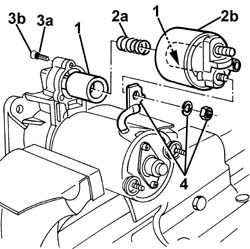
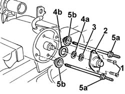
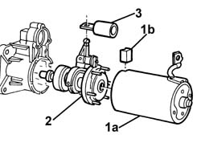
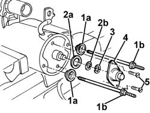
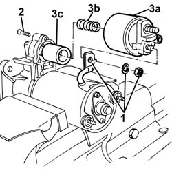

5520B18 STARTER MOTOR SOLENOIDS - R+R WITH MOTOR REMOVED
- Path
- Procedures > 55 ELECTRICAL EQUIPMENT > 5520 ENGINE STARTING > 5520B STARTER MOTOR AND COMPONENTS > 5520B18 STARTER MOTOR SOLENOIDS - R+R WITH MOTOR REMOVED
- Kind
- repair procedure (removal / refitting; the operation number is the code)
- Applies to
- engines: 2.0 JTS, 3.2 V6, 1.9 JTD 16V; all production periods
- Interactive page
- https://sloeber94.github.io/elrnDB-aGt/en/#/125001624
Applies to: engines: 2.0 JTS, 3.2 V6, 1.9 JTD 16V; all production periods
 Removing
Removing
 Refitting
RefittingFix the starter motor in a vice at the bench.
1. Disconnect the electrical supply terminal.
2. Undo the solenoid fixing bolts.
3. Remove the fixed section of the solenoid (3a) and recover the spring (3b). If necessary, remove the mobile part of the electromagnet (3c). Proceed as follows.

Applies to: engines: 2.0 JTS, 3.2 V6, 1.9 JTD 16V; all production periods
1. Undo the cap retaining bolts.
2. Remove the cap.
3. Disengage the retaining clip.
4. Remove thrust washer (4a) and seal (4b).
5. Unscrew and remove bolts (5a) and recover special washers (5b).

Applies to: engines: 2.0 JTS, 3.2 V6, 1.9 JTD 16V; all production periods
1. Remove the starter motor from the vice and remove motor unit (1a). Then recover gasket (1b).
2. Remove the mechanical reduction unit.
3. Disconnect the mobile electromagnet element from the reduction unit.

Applies to: engines: 2.0 JTS, 3.2 V6, 1.9 JTD 16V; all production periods
Refitting
RemovingCheck that the dismantled components are not damaged.
Clean the components with compressed air and a clean cloth. Do not use liquid detergents.
1. Connect the mobile electromagnet element to the reduction unit.
2. Fit the mechanical reduction unit in its seat.
3. Refit motor unit (3a), then refit seal (3b).
Applies to: engines: 2.0 JTS, 3.2 V6, 1.9 JTD 16V; all production periods
Fix the starter motor in a vice at the bench.
1. Fit special washers (1a) and tighten bolts (1b).
2. Fit seal (2a) and thrust washer (2b).
3. Do up the retaining clip.
4. Apply a suitable amount of grease to the cap and refit.
5. Tighten the cap retaining bolts.

Applies to: engines: 2.0 JTS, 3.2 V6, 1.9 JTD 16V; all production periods
1. Lubricate the sliding surfaces of the moving parts with grease and fix the solenoid.
2. Place spring (2a) and the fixed part of the solenoid (2b) in position.
3. Apply a small amount of sealant (3a) to electromagnet bolts (3b), then tighten fully.
4. Connect the electrical supply terminal and remove the starter motor from the vice.
